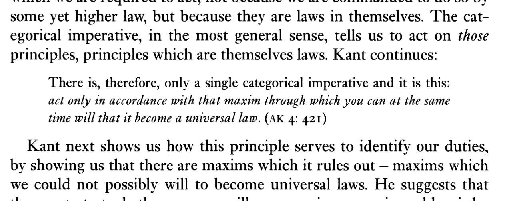

Lens One: Would It Be Okay If Everyone Did This?
The first lens we use is Kant’s categorical imperative:

Lens 01 · Kant, Groundwork of the Metaphysics of Morals (1785)“[A]ct only in accordance with that maxim through which you can at the same time will that it become a universal law.”
In plain terms: could the rule behind your act hold for everyone at once?
Michael Schur is the author of How to Be Perfect: The Correct Answer to Every Moral Question. He has a plain-English way of explaining Kant:
Lens 01 · Schur, How to Be Perfect, p. 256“Would it be okay if everyone did this? What would the world be like if every single person were allowed to do whatever I’m about to do?”
The answer depends on how you describe the action being analyzed. A simple description of the action would be: I take work I did not make and did not pay for, to build something that competes with it. That’s very obviously hypocritical, but that description also condemns a student for reading a library book (and is not how fair use law works).
Once you start researching, the two acts stop looking like the same thing. One side collected what authors put on the open internet. The other made about twenty-four thousand fake accounts to get past a locked door.
Using the second description costs the clean hypocrisy story. What’s left is smaller but true: the pirated books and the fraudulent accounts fail Kant’s test the same way. Training and distilling on their own pass or fail based on their conduct. Whoever controls the narrative picks the guilty verdict if the law doesn’t step in and judge them.
I take work I did not make and did not pay for, to build something that competes with it.
Described simply, the two acts render as the same sentence — and both fail the test.
The simple description
I take work I did not make and did not pay for, to build something that competes with it.
Described simply, the two acts render as the same sentence — and both fail the test.
The richer description
Collected what authors had placed on the open internet.
Created roughly twenty-four thousand fraudulent accounts to get behind a door that was deliberately locked.
With the richer description, the acts split into different sentences — only the fraudulent acquisition fails.
Lens Two: Walk the Supply Chain
The second lens ignores the ownership argument and instead focuses on the complex mechanisms of modern artificial intelligence. In “Talkin’ ’Bout AI Generation,” Katherine Lee, A. Feder Cooper, and James Grimmelmann focus on this exact problem:
Lens 02 · Lee, Cooper & Grimmelmann, p. 251“[G]enerative AI” is not just one product from one company. It is a catch-all name for a massive ecosystem of loosely related technologies.
How the Two Lenses Divide the Labor
One note on method. Kant’s test checks if a rule can be stated without hypocrisy. The supply chain tells us where to attach the duty. The money and collapse data later on are consequences. I use them as evidence about which conduct matters, and they aren’t a second moral standard.